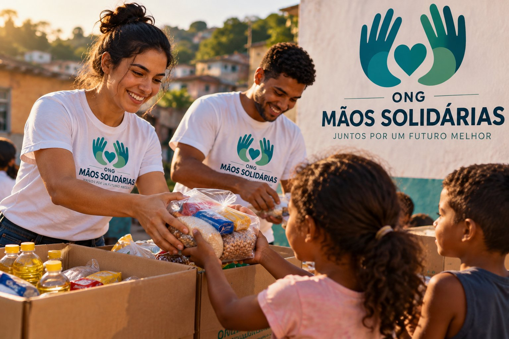

Nossos projetos

A ONG Mãos Solidárias realiza ações sociais para ajudar pessoas e comunidades em situação de vulnerabilidade.
Saiba como ajudarCampanha de doação
Arrecadamos alimentos, roupas e outros itens para ajudar famílias que precisam de apoio.
Trabalho voluntário
Os voluntários podem participar das campanhas, eventos e ações promovidas pela ONG.
×
Como ajudar a ONG
Você pode colaborar realizando doações ou participando como voluntário nas ações da ONG Mãos Solidárias.
Quero participar